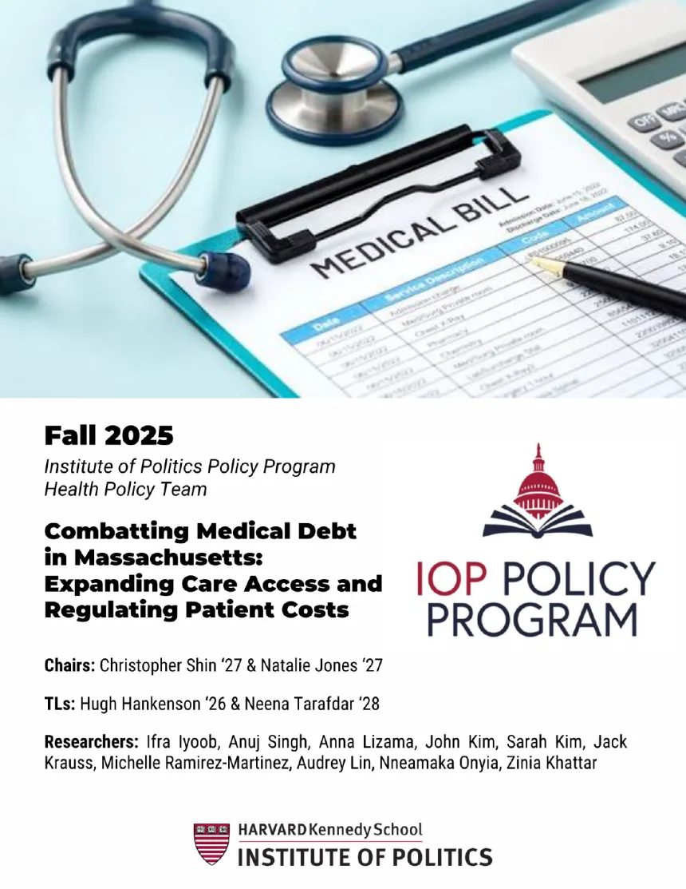
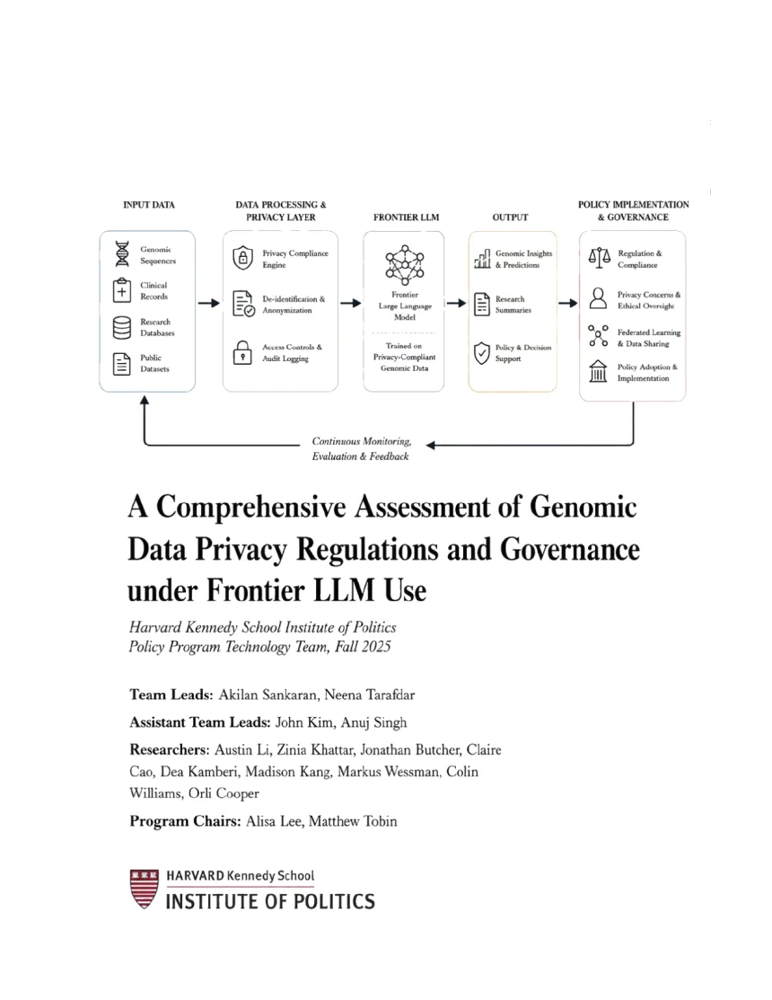

Health
Healthcare financing, pharmaceutical regulation, mental health infrastructure, public health preparedness, and insurance market design.
Our mission
The International Policy Conference, or IPC, was established in 2026 by a group of Harvard students and graduates in hopes of providing exposure to global perspectives to future leaders early in their education. IPC is open to both high school and collegiate students worldwide.
We strive to encourage students to take some of the problems they might have seen in their communities and ask not just “what is the problem” but “why does it persist, how can we solve it, and who can we work with to change it.”
IPC challenges students by delving deep into fields they might never have encountered in school, such as economics, international law, public health, environmental science, and more. In the process of developing research, synthesis, public speaking, negotiation, and persuasive communication skills, students will be given the unique opportunity to get their policy recommendations to the legislators whose vote influences real-world outcomes in their communities.
A world of questions
Healthcare financing, pharmaceutical regulation, mental health infrastructure, public health preparedness, and insurance market design.

Climate mitigation, carbon pricing, biodiversity regulation, environmental justice, and international climate governance.

Tax policy, public expenditure, labor markets, trade policy, income inequality, and macroeconomic stabilization.

AI regulation, data privacy, algorithmic accountability, platform governance, cybersecurity, and digital infrastructure.

School funding equity, higher education access, early childhood development, curriculum policy, and teacher workforce.

Foreign policy, arms control, multilateral institutions, humanitarian law, refugee policy, and non-proliferation.

Affordable housing production, zoning and land use, homelessness, urban infrastructure, and community development.

Policing policy, sentencing reform, juvenile justice, voting rights, civil liberties, and anti-discrimination law.
Past Proposals
From idea to impact

Build the foundation: define a policy problem, investigate its context, and develop a research-backed recommendation.

Translate your research into a concise, rigorous policy brief that makes a compelling case for action.

Bring your proposal to life in a clear and creative pitch for a broad public audience.

Selected finalists present their ideas and take part in an executive question-and-answer session in Boston.
Competition Standards
| Criterion | Description | Points |
|---|---|---|
| Problem Definition | Clarity and precision; use of quantitative indicators; appropriate scoping | 15 |
| Evidence Quality | Quality, recency, and independence of sources; correct interpretation of causal vs. correlational claims | 25 |
| Analytical Rigor | Depth of stakeholder analysis; quality of options comparison; soundness of trade-off reasoning | 25 |
| Policy Recommendation | Specificity of proposed intervention; feasibility; identification of implementing authority | 20 |
| Counter-Argument Engagement | Substantiveness of objections addressed; quality of responses | 10 |
| Writing and Structure | Clarity, organization, adherence to required structure | 5 |
| Criterion | Description | Points |
|---|---|---|
| Problem Framing | Evidence-grounded introduction within the time allotted | 15 |
| Clarity of Proposal | Precision of the intervention; whether the mechanism of effect is clearly explained | 20 |
| Evidence Presentation | Quality of empirical evidence and effectiveness of communication to a generalist audience | 25 |
| Objection Handling | Credibility and thoroughness of objections addressed | 20 |
| Communication | Clarity, pace, structure, and accessibility of the video as a standalone presentation | 20 |
All finalists must submit a 500-word updated policy summary on Day 2, due by 11:59 PM local time. Required elements: the policy recommendation in one sentence; the three strongest pieces of supporting evidence; the primary implementation challenge; and the proposed metric by which the policy's effectiveness should be evaluated within five years. This document is provided to the executive judges prior to the Day 3 Q&A session.
| Criterion | Description | Points |
|---|---|---|
| Command of Material | Depth of knowledge; ability to cite specific data without notes; familiarity with the literature | 25 |
| Pitch Effectiveness | Clarity, structure, and persuasive coherence of the 12-minute live presentation | 20 |
| Q&A Responsiveness | How directly and substantively each question was addressed | 30 |
| Policy Realism | How implementable and politically viable the proposal appears to working policymakers | 15 |
| Intellectual Honesty | Acknowledgment of limitations; willingness to update positions in response to new information | 10 |
Recognition
Six recognition levels narrowing from the top quarter of submissions down to the session champion, determined by composite scores across judged stages.
All recognized teams receive an official certificate of achievement following integrated paper, video, and live adjudication.
Competition Resources
Exemplary finals briefs developed with the Harvard Kennedy School’s Institute of Politics.

State-level care access reforms and patient cost regulations prepared for the Finals brief round.

Regulatory assessment of genomic data privacy compliance and oversight under frontier AI deployment.
Additional competition guidelines, research templates, and submission instructions will be published ahead of the 2027 cycle.
2027 cycle
Sign up for updates to receive the registration announcement first.
Teams investigate a problem and submit a research-backed recommendation.
Selected teams communicate their ideas in a concise recorded pitch.
Finalists present live, take part in executive Q&A, and celebrate their work.
Questions, answered
IPC is open to high school and collegiate students worldwide. Participants may compete as individuals or in teams. Full eligibility requirements will be published with registration for Spring 2027.
Participants (individuals or teams) progress through research, a written policy brief, and a short video pitch. Finalists also prepare for a live presentation and executive question-and-answer session.
Judges assess the quality of research, clarity of the policy recommendation, feasibility, evidence, equity, and the team’s ability to communicate their work persuasively.
Join the IPC mailing list through the contact section to receive the Spring 2027 timeline, eligibility requirements, and participant resources when they are announced.
The people behind IPC

Founder, Co-Chair
Harvard College ‘29

Co-Chair
Harvard College ‘26, University of Oxford ‘28, Harvard Law School ‘31
Building a Global Network
We are building IPC chapters at leading high schools and universities worldwide. Chapter leaders coordinate local outreach, organize information sessions, and support participants through the competition process.
Applications are being reviewed on a rolling basis. Apply by Friday, August 21, 2026 for priority consideration.
Apply to Start a Chapter